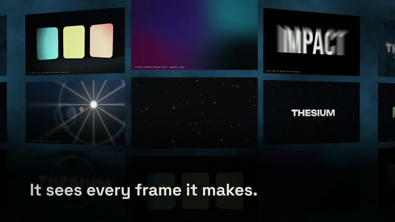
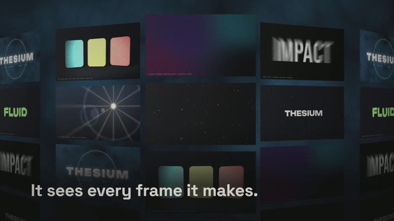
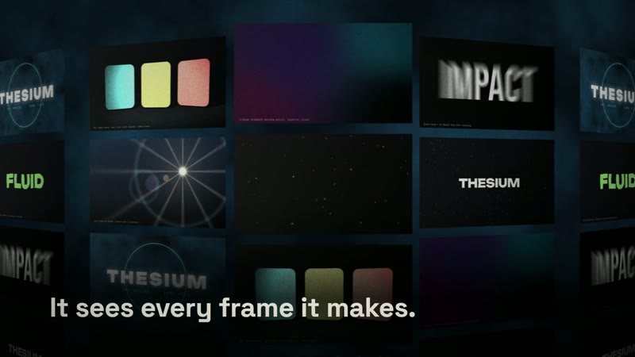

Engines
Pick the renderer. Keep the studio.
Every engine gets the same stills, previews, checks, sound and mastering. The engine only changes how the film is written.
Web
The film is
A web page:
film/index.htmlBest for
Anything a browser draws: WebGL, canvas, CSS 3D, SVG, video
Needs
Chrome, Edge or Chromium

EffectCraft
The film is
An After Effects-style script:
film/build.jsxBest for
Classic motion design: effects, glows, 3D lights, text animators
Needs
The EffectCraft app

Remotion
The film is
A React project:
film/remotion/Best for
Long films built from reusable components and data
Needs
npm install in the film
HyperFrames
The film is
HTML with a GSAP timeline:
film/hyperframes/Best for
Timeline-driven choreography and HyperFrames' building blocks
Needs
The HyperFrames CLI (fetched by npx)
>_
Any CLI
The film is
Commands in
thesium.json that draw a frameBest for
Blender, Manim, Motion Canvas, your own renderer
Needs
That tool
The same film on four engines, at 13.5 s

EffectCraft528 s

HyperFrames765 s
Remotion1,737 sFull 30 s masters at 1080p with 8 motion-blur samples, mastered sound and QA, on one Windows machine.